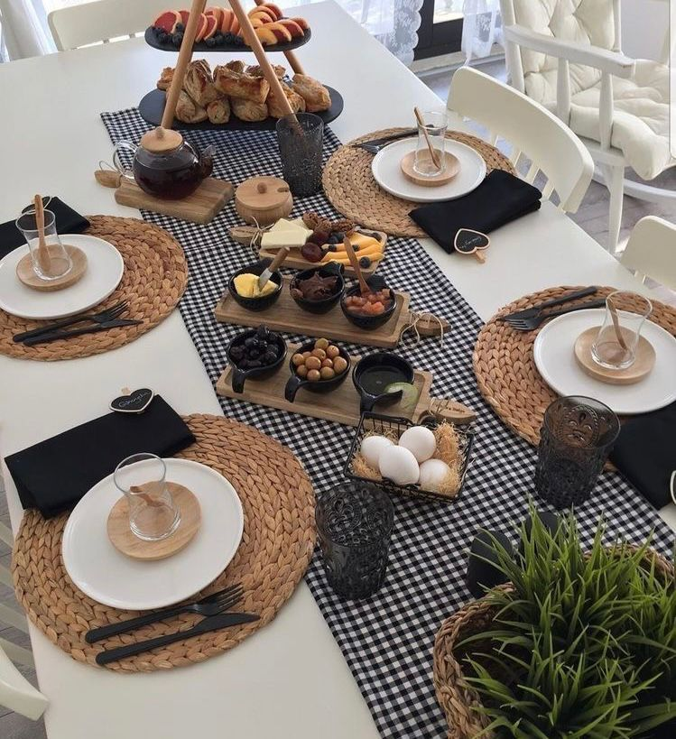

|
|
| HOME | PRODUTOS | CONTATO |
|  |
SOBRE A CI!Me chamo Cibely Zanichelli e tenho a Ci Bella Mesa desde 2021, comecei com o intuito de levar alegria para as pessoas através das mesas! Sou apaixonada por mesa posta e acredito que na mesa passamos momentos felizes com pessoas que amamos!Me inspiro na felicidade que posso trazer ao levar cor e luxo a mesas de diversas pessoas, mudando o dia de cada uma de alguma forma! |
COMO SÃO FEITOS OS PRODUTOS!
|
|